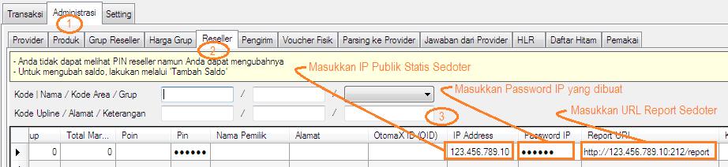

Mendaftarkan Transaksi IP Sedoter
Manakala Anda menjadi Supplier dan Mitra atau Member Anda akan melakukan transaksi via IP ia harus Anda daftarkan terlebih dahulu di sistem OtomaX agar dapat bertransaksi. Namun sebaiknya informasikan dulu ke Mitra Anda spesifikasi transaksi IP OtomaX karena dimungkinkan tidak semua software pulsa support (selengkapnya klik disini) supaya mereka dapat menanyakan ke team support mereka apakah software yang mereka gunakan mendukung atau tidak. Jika mendukung, baru kemudian Anda daftarkan.
Perlu Anda ingat bahwa untuk menjadi Supplier dan dapat menerima transaksi via IP dibutuhkan sebuah Modul OtomaX bernama IP Center, dimana ini hanya ada di OtomaX edisi Enterprise atau Ultimate pada versi minimal 3.6.8, sehingga bila edisi OtomaX Anda bukan edisi tersebut silahkan melakukan upgrade terlebih dahulu, klik disini; dan bila Anda ingin membeli OtomaX baru klik disini dan bila mau update ke versi 3.6.8 klik disini.
Sebelum membahas hal di atas silahkan dipersiapkan dahulu hal pendukung agar dapat transaksi IP, selengkapnya klik disini.
Nah, setelah semua terpenuhi berikut ini langkah - langkahnya:
- Mintalah IP Publik Statis Sedoter. Ini bersifat optional, berguna agar Sedoter hanya dapat mengirimkan transaksi melalui IP tersebut (peningkatan keamanan)
- Mintalah URL Report Sedoter
- Buatkan Password IP minimal 6 karakter terdiri dari angka, huruf besar, huruf kecil dan tanda baca. Contoh: Tu0#7h
-
Masuk Administrasi -> Reseller -> cari Akun Mitra Anda dan lakukan seperti petunjuk di gambar di bawah ini:

- Klik tombol Simpan
- Selesai
Kemudian, bila Anda memiliki pertanyaan-pertanyaan seputar tehnis transaksi via IP di OtomaX silahkan kirimkan pertanyaan Anda ke alamat email support@otomax-software.com atau klik disini.
Catatan: Sedoter ialah lawan dari supplier, yakni server yang mengambil stok atau host to host ke server lain; sedangkan Supplier ialah server yang stoknya diambil oleh server lain.